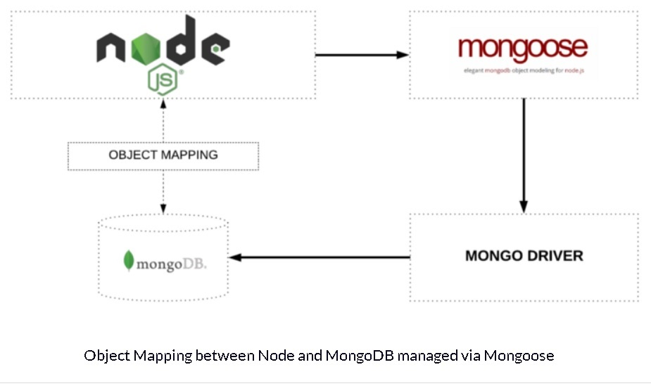
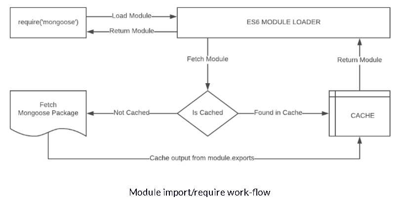
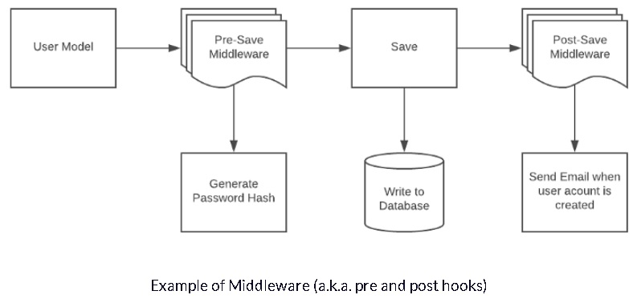

Introduction to Mongoose for MongoDB
Mongoose is an Object Data Modeling (ODM) library for MongoDB and Node.js. It
manages relationships between data, provides schema validation, and is used to
translate between objects in code and the representation of those objects in
MongoDB.

MongoDB is a schema-less NoSQL document database. It means you can store JSON
documents in it, and the structure of those documents can vary as it is not
enforced like SQL databases. This is one of the advantages of using NoSQL as
it speed ups application development and reduces the complexity of
deployments.
Below is an example of how data is stored in Mongo vs SQL Database:
Click here and scroll
Terminologies
Collections
'Collections' in MondoDB are equivalent to tables in relational databases.
They can hold multiple JSON documents.
Documents
'Documents' are equivalent to records or rows of data in SQL. While a SQL
row can reference data in other tables, Mongo documents usually combine
that in a document.
Fields
'Fields' or attributes are similar to columns in a SQL table.
Schema
While MongoDB is a schema-less, SQL defines a schema via the table definition.
A Mongoose 'schema' is a document data structure (or shape of the document)
that is enforced via the application layer.
Models
'Models' are higher-order constructors that take a schema and create an instance
of a document equivalent to records in a relational database.
Getting started
Mongo installation
Download the appropriate MongoDB version for your Operating system from the
MongoDB website.
Let's navigate through some of the basics of Mongoose by implementing a model that
represents data for a simplified address book.
I am using Visual Studio Code, Node 8.9, and NPM 5.6. Fire up your favourite IDE,
create a blank project, and let's get started! We will be using the
limited ES6 syntax in Node, so we won't be configuring Babel.
NPM Install
Let's go to the project folder and initialize our project
npm init -y
Let's install Mongoose and a validation library with the following
command:
npm install mongoose validator
The abode install command will install the latest version of the
libraries. The Mongoose syntax in this article is specific to
Mongoose v5 and beyond.
Database Connection
Create a file ./src/database.js
under the project root.
Next, we will add a simple class with a method that connects to
the database.
Your connection string will vary based on your installation.
Réf ./src/database.js
The require('mongoose') call above
returns a Singleton object. It means that the first time you
call require('mongoose'), iti is
creating an instance of the Mongoose class and returning it.
On subsequent calls, it will return the same instance that was
created and returned o you the first time because of how module
import/export works in ES6.

Similarly, we have turned our Database class into a singleton by returning
an instance of the class in the module.exports
statement because de only need a single connection to the database.
ES6 makes it very easy for us to create a singleton (single instance)
pattern because of how the module loader works by caching the response of a
previously imported file.
Mongoose Schema vs. Model
A Mongoose model is a wrapper on the Mongoose schema. A Mongoose schema defines
the structure of the document, default values, validators, etc. whereas a
Mongoose model provides an interface to the database for creating, querying,
updating, deleting records, etc.
Creating a Mongoose model comprises primarily of 3 parts:
Referencing Mongoose
let mongoose = require('mongoose')
This reference will be the same as the one that was returned when we
connected to the database, which means the schema and model definitions will
not need to explicitly connect to the database.
Defining the Schema
A schema defines a document properties through an object where the key name
corresponds to the property name in the collection.
let emailSchema = new mongoose.Schema({
email: String
})
Here we define a property called email with a schema type
String which maps to an internal validator that will be
triggered when the model is saved to the database. It will fail if the data
type of the value is not a string type.
The following Schema Types are permitted:
- Array
- Boolean
- Buffer
- Date
- Mixed (A generic / flexible data type)
- Number
- ObjectId
- String
Mixed and ObjectId are defined under
require('mongoose').Schema.Types.
Exporting a Model
We need to call the model constructor on the Mongoose instance and pass
it the name of the collection and a reference to the schema definition.
module.exports = mongoose.model('Email', emailSchema)
Let's combine the above code into ./src/models/email.js
to define the contents of a basic email model:
let mongoose = require('mongoose')
let emailSchema = new mongoose.Schema({
email: String
})
module.exports = mongoose.model('Email', emailSchema)
A schema definition should be simple, but its complexity is usually based on
application requirements. Schemas can be reused and they can contain several
child-schemas too. In the example above, the value of the email property is a
simple value type. However, it can also be an object type with additional
properties on it.
We can create an instance of the model we defined above and populate it using
the following syntax:
let EmailModel = require('./email')
let msg = new EmailModel({
email: "ada.lovelace@gmail.com"
})
Let's enhance the Email schema to make the email property unique, required
field and convert the value tot lowercase before saving it. We can also add
a validation function that will ensure that the value is a valid email
address. We will reference and use the validator library installed earlier.
let mongoose = require('mongoose')
let validator = require('validator')
let emailSchema = new mongoose.Schema({
email: {
type: String,
required: true,
unique: true,
lowercase: true,
validate: value => validator.isEmail(value)
}
})
module.exports = mongoose.model('Email', emailSchema)
Basic Operations
Mongoose has a flexible API and provides many ways to accomplish a task. We
will not focus on the variations because that is out of scope for this
article, but remember that most of the oparitions can be done in more than
one way either syntactically or via the application architecture.
Create Record
Let's create an instance of the email model and save it to the database:
let EmailModel = require('./email')
let msg = new EmailModel({
email: 'ADA.LOVELACE@gmail.com'
})
msg.save()
.then(doc => { console.log(doc) })
.catch(err => { console.error(error) })
The result is a document that is returned upon a successful save:
{
_id: 5a78fe3e2f44ba8f85a2409a,
email: 'ada.lovelace@gmail.com',
__v: 0
}
The following fields are returned (internal fields are prefixed with an
underscore).
- The _id field is auto-generated by Mongo and is
a primary key of the collection. Its value is a unique identifier
for the document.
- The value of the email field is returned. Notice that
it is lower-cased because we specified the lowercase: true
attribute in the schema.
- __v is the versionKey property set on each document
when first created by Mongoose, its value contains the inernal revision
of the document.
If you try to repeat th esave opetion above, you will get an error because we
have specified that the email field should be unique.
Fetch Record
Let's try to retrieve the record we saved to the database earlier. The model
class exposes several static and instance methods to perform operations on the
database. We will now try to find the record that we created previously using
the find method and pass the email as the search term.
EmailModel
.find({
email: 'ada.lovelace@gmail.com'
})
.then(doc => {
console.log(doc);
})
.catch(err => {
console.error(err)
})
The document returned will be similar to what was discovered when we created
the records:
{
_id: 5a78fe3e2f44ba8f85a2409a,
email: 'ada.lovelace@gmail.com',
__v: 0
}
Update Record
Let's modify the record above by changing the email address and adding
another field to it, all in a single operation. For performance reasons,
Mongoose won't return the updated document so we need to pass an
additional parameter to ask for it:
EmailModel
.findOneAndUpdate(
{
email: 'ada.lovelace@gmail.com' // search query
},
{
email: 'ada.nicename@gmail.com' // field: value to update
},
{
new: true, // return updated doc
runValidators: true // validate before update
}
)
.then(doc => {
console.log(doc)
})
.catch(err => {
console.error(err)
})
})
The document returned will contain the updated email:
{
_id: 5a78fe3e2f44ba8f85a2409a,
email: 'theoutlander@live.com',
__v: 0
}
Delete Record
We will use the findOneAndRemove call to delete a
record. It returns the original document that was removed:
EmailModel
.findOneAndRemove(
{
email: 'ada.nicename@gmail.com'
}
)
.then(response => {
console.log(response)
})
.catch(err => {
console.error(err)
})
Helpers
We have looked at some of the basic functionality above known as CRUD
(Create, Read, Update, Delete) operations, but Mongoose also provides the
ability to configure several types of helper methods and properties. These
can be used to further simplify working with data.
Let's create a user schema in ./src/models/user.js
with the fields firstName and lastName:
let mongoose = require('mongoose')
let userSchema = new mongoose.Schema({
firstName: String,
lastName: String
})
module.exports = mongoose.model('User', userSchema)
Virtual Property
A virtual property is not persisted to the database. We can add it to our
schema as a helper to get and set values.
Let's create a virtual property called fullName which can
be used to set values on firstName and lastName and
retrieve them as a combined value when read:
userSchema.virtual('fullName').get(function() {
return this.firstName + ' ' + this.lastName;
})
userSchema.virtual('fullname').set(function(name) {
let str = name.split(' ');
this.firstName = str[0]
this.lastName = str[1]
})
Callbacks for get and set must use the function keyword as we need
to access the model via this keyword. Using fat arrow functions will
change what this refers to.
Now we can set firstName and lastName by assigning a value to
fullName:
let model = new UserModel();
model.fullName = 'James Bond'
console.log(model.toJSON()) // Output model fields as JSON
console.log()
console.log(model.fullName) // Output the full name
The code above will output the following:
{ _id: 5a7a4248550ebb9fafd898cf,
firstName: 'Thomas',
lastName: 'Anderson' }
Thomas Anderson
Instance Methods
We can create custom helper methods on the schema and access them via the
model instance. These methods will have access to the model object and they
can be used quite creatively. For instance, we could create a method to find
all the people who have the same first name as the current instance.
In this example, let's create a function to return the initials for the
current user. Let's add a custom helper method called getInitials
to the schema:
userSchema.methods.getInitials = function() {
return this.firstName[0] + this.lastName[0]
}
This method will be accessible via a model instance:
let model = new UserModel({
firstName: 'James',
lastName: 'Jones'
});
let initials = model.getInitials()
console.log(initials)
Static Methods
Similar to instance methods, we can create static methods on the schema.
Let's create a method to retrieve all users in the database:
userSchema.statics.getUsers() = function() {
return new Promise((resolve, reject) => {
this.find((err, docs) => {
if(err) {
console.error(err)
return reject(err)
}
resolve(docs)
})
})
}
Calling getUsers() on the Model class will return all the users
in the database:
UserModel.getUsers()
.then(docs => {
console.log(docs)
})
.catch(err => {
console.error(err)
})
Adding instance and static methods is a nice approach to implement to
database interactions on collections and records.
Middleware
Middleware are functions that run at specific stages of a pipeline.
Mongoose supports middleware for the following operations:
- Aggregate
- Document
- Model
- Query
For instance, models have pre and post functions that take
two parameters:
- Type of event ('init', 'validate', 'save', 'remove')
- A callback that is executed with this referencing the model
instance

Let's try an example by adding two fields called createdAt and
updatedAt to our schema:
let mongoose = require('mongoose')
let userSchema = new mongoose.Schema({
firstName: String,
lastName: String,
createdAt: Date,
updatedAt: Date
})
module.exports = mongoose.model('User', userSchema)
When model.save() is called, there is a pre('save', ...) and
post('save', ...) event that is triggered. For the second parameter,
you can pass a function that is called when the event is triggered. These
functions take a parameter to the next function in the middleware chain.
Let's add a pre-save hook and set values for createdAt and
updatedAt:
userSchema.pre('save', function(next) {
let now = Date.now();
this.updatedAt = now;
// Set a value for createdAt if it is null
if(!this.createdAt)
this.createdAt = now
// Call the next function in the pre-save chain
next()
})
Let's create and save our model:
let model = UserModel({
fullName: 'Thomas Jesk'
});
model.save()
.then(docs => {
console.log(docs)
})
.catch(err => {
console.error(err)
})
You should set values for createdAt and updatedAt when the
record that is created is printed:
{ _id: 5a7bbbeebc3b49cb919da675,
firstName: 'Thomas',
lastName: 'Anderson',
updatedAt: 2018-02-08T02:54:38.888Z,
createdAt: 2018-02-08T02:54:38.888Z,
__v: 0 }
Plugins
Suppose that we want to track when a record was created and last updated on
every collection in our database. Instead of repeating the above process,
we can create a plugin and apply it to every schema.
Let's create a file ./src/model/plugins/timestamp.js
and replicate the above functionality as a reusable module:
module.exports = function timestamp(schema) {
schema.add({
createdAt: Date,
updatedAt: Date
});
schema.pre('save', functon(next) {
let now = Date.now()
this.updatedAt = now;
if(!this.createdAt)
this.createdAt = now
next()
})
}
To use this plugin, we simply pass it to the schemas that should be
given this functionality:
let timestampPlugin = require('./plugins/timestamp')
userSchema.plugin(timestampPlugin)
emailSchema.plugin(timestampPlugin)
Query Building
Mongoose has a very rich API that handles many complex operatons supported
by MongoDB. Consider a query where we can incrementally build query
components.
In this example, we are going to:
- Find all users
- Skip the first 100 records
- Limit the results to 10 records
- Sort the results by the firstName field
- Select the firstName
- Execute that query
UserSchema.find() // find all users
.skip(100) // skip first 100 users
.limit(10) // limit to 10 records
.sort({firstName: 1}) // Sort ascending by firstName
.select({firstName: true}) // Select firstName only
.exec() // execute the query
.then(docs => {
console.log(docs)
})
.catch(err => {
console.error(err)
})
Closing
We have barely scratched the surface exploring some of the capabilities of
Mongoose. It is a rich library full of useful and powerful features that
make it a joy to work with data models in the application layer.
While you can interact with Mongo directly using Mongo Driver, Mongoose will
simplify that interaction by allowing you to model relationships between data
and validate them easily.
Fun fact: Mongoose is created by Valeri Karpov who is an
incredibly talented engineer!
He coined the term The MEAN Stack